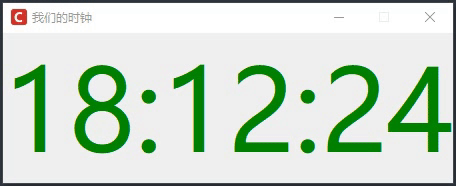
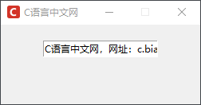
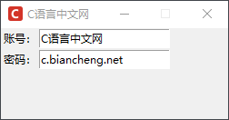
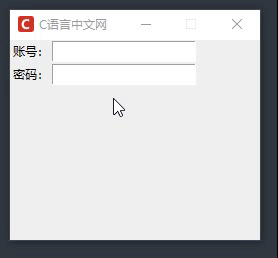
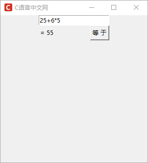
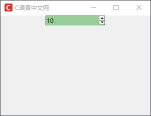
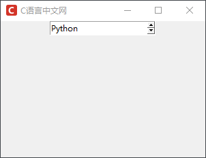

Tkinter Entry输入控件
Entry 控件是 Tkinter GUI 编程中的基础控件之一，它的作用就是允许用户输入内容，从而实现 GUI 程序与用户的交互，比如当用户登录软件时，输入用户名和密码，此时就需要使用 Entry 控件。
Entry 控件使用起来非常简单，下面对该控件做简单的介绍。基本语法格式如下：
在界面编程的过程中，有时我们需要“动态跟踪”一些变量值的变化，从而保证值的变换及时的反映到显示界面上，但是 Python 内置的数据类型是无法这一目的的，因此使用了 Tcl 内置的对象，我们把这些方法创建的数据类型称为“动态类型”，比如 StringVar() 创建的字符串，称为“动态字符串”。
下面通过一个时钟示例对“动态字符串”做进一步了解，代码如下：
注意：在 Entry 控件中，我们可以通过以下方式来指定字符的所在位置：
示例如下：
认识完 Entry 控件的基本属性和常用方法后，下面我看一组简单的示例：
下面对 validate 的参数值做简单的介绍：
下面看一组具体的运行示例：
不仅如此，Tkinter 还为验证函数提供可一些额外的选项，不过想要使用这些额外选项，需要提前使用 register() 方法对验证函数进行注册，。常用的选项如下所示：
下面看一组见简单的示例应用：
若不是数字，而是字符串形式的选项值，则采用
Entry 控件使用起来非常简单，下面对该控件做简单的介绍。基本语法格式如下：
tk_entry = Entry( master, option, ... )
基本属性
Entry 控件除了具备一些共有属性之外，还有一些自身的特殊属性，如下表所示：| 属性名称 | 说明 |
|---|---|
| exportselection | 默认情况下，如果在输入框中选中文本会复制到粘贴板，如果要忽略这个功能，可以设置为 exportselection=0 |
| selectbackground | 选中文字时的背景颜色 |
| selectforeground | 选中文字时的前景色 |
| show | 指定文本框内容以何种样式的字符显示，比如密码可以将值设为 show="*" |
| textvariable | 输入框内值，也称动态字符串，使用 StringVar() 对象来设置，而 text 为静态字符串对象 |
| xscrollcommand | 设置输入框内容滚动条，当输入的内容大于输入框的宽度时使用户 |
1) 动态数据类型
上述表格中提及了 StringVar() 方法，和其同类的方法还有 BooleanVar()、DoubleVar()、IntVar() 方法，不难看出他们分别代表一种数据类型，即字符串、布尔值、浮点型、整型，这些方法并不属于 Python 内置方法，而是 Tkinter 特有的方法。在界面编程的过程中，有时我们需要“动态跟踪”一些变量值的变化，从而保证值的变换及时的反映到显示界面上，但是 Python 内置的数据类型是无法这一目的的，因此使用了 Tcl 内置的对象，我们把这些方法创建的数据类型称为“动态类型”，比如 StringVar() 创建的字符串，称为“动态字符串”。
下面通过一个时钟示例对“动态字符串”做进一步了解，代码如下：
import tkinter as tk
import time
root = tk.Tk()
root.title("C语言中文网")
root.iconbitmap('C:/Users/Administrator/Desktop/C语言中文网logo.ico')
root.geometry('450x150+100+100')
root.resizable(0,0)
root.title('我们的时钟')
# 获取时间的函数
def gettime():
# 获取当前时间
dstr.set(time.strftime("%H:%M:%S"))
# 每隔 1s 调用一次 gettime()函数来获取时间
root.after(1000, gettime)
# 生成动态字符串
dstr = tk.StringVar()
# 利用 textvariable 来实现文本变化
lb = tk.Label(root,textvariable=dstr,fg='green',font=("微软雅黑",85))
lb.pack()
# 调用生成时间的函数
gettime()
# 显示窗口
root.mainloop()
程序运行结果如下：

图1：动态时钟实现
图1：动态时钟实现
常用方法
除了一些基本的属性之外，Entry 控件还提供了一些常用的方法，如下所示：| 方法 | 说明 |
|---|---|
| delete() | 根据索引值删除输入框内的值 |
| get() | 获取输入框内的是 |
| set() | 设置输入框内的值 |
| insert() | 在指定的位置插入字符串 |
| index() | 返回指定的索引值 |
| select_clear() | 取消选中状态 |
| select_adujst() | 确保输入框中选中的范围包含 index 参数所指定的字符，选中指定索引和光标所在位置之前的字符 |
| select_from (index) | 设置一个新的选中范围，通过索引值 index 来设置 |
| select_present() | 返回输入框是否有处于选中状态的文本，如果有则返回 true，否则返回 false。 |
| select_to() | 选中指定索引与光标之间的所有值 |
| select_range() | 选中指定索引与光标之间的所有值，参数值为 start,end，要求 start 必须小于 end。 |
注意：在 Entry 控件中，我们可以通过以下方式来指定字符的所在位置：
- 数字索引：表示从 0 开始的索引数字；
- "ANCHOE"：在存在字符的情况下，它对应第一个被选中的字符；
- "END"：对应已存在文本中的最后一个位置；
- "insert(index,'字符')：将字符插入到 index 指定的索引位置。
示例如下：
import tkinter as tk
win = tk.Tk()
# 设置主窗口
win.geometry('250x100')
win.title("C语言中文网")
win.iconbitmap('C:/Users/Administrator/Desktop/C语言中文网logo.ico')
win.resizable(0,0)
# 创建输入框控件
entry1 = tk.Entry(win)
# 放置输入框，并设置位置
entry1.pack(padx=20, pady=20)
entry1.delete(0, "end")
# 插入默认文本
entry1.insert(0,'C语言中文网，网址：c.biancheng.net')
# 得到输入框字符串
print(entry1.get())
# 删除所有字符
# entry1.delete(0, tk.END)
win.mainloop()
程序运行结果：

图2：Entry控件
图2：Entry控件
认识完 Entry 控件的基本属性和常用方法后，下面我看一组简单的示例：
import tkinter as tk
win =tk.Tk()
# 设置主窗口
win.geometry('250x100')
win.title("C语言中文网")
win.iconbitmap('C:/Users/Administrator/Desktop/C语言中文网logo.ico')
win.resizable(0,0)
# 新建文本标签
labe1 = tk.Label(win,text="账号：")
labe2 = tk.Label(win,text="密码：")
# grid()控件布局管理器，以行、列的形式对控件进行布局，后续会做详细介绍
labe1.grid(row=0)
labe2.grid(row=1)
# 为上面的文本标签，创建两个输入框控件
entry1 = tk.Entry(win)
entry2 = tk.Entry(win)
# 对控件进行布局管理，放在文本标签的后面
entry1.grid(row=0, column=1)
entry2.grid(row=1, column=1)
# 显示主窗口
win.mainloop()
程序运行结果：

图3：tkinter Entry控件
图3：tkinter Entry控件
注意：从上述运行结果可以看出，GUI 界面可以说真的很“简陋”，其实一款界面美观的 GUI 程序会受到诸多因素影响，比如距离调整、样式设置等等
Entry控件验证功能
Entry 控件也提供了对输入内容的验证功能，比如要求输入英文字母，你却输入了数字，这就属于非法输入，Entry 控件通过以下参数实现对内容的校验：| 参数 | 说明 |
|---|---|
| validate | 指定验证方式，字符串参数，参数值有 focus、focusin、focusout、key、all、none。 |
| validatecommand | 指定用户自定义的验证函数，该函数只能返回 True 或者 Fasle |
| invalidcommand | 当 validatecommand 指定的验证函数返回 False 时，可以使用该参数值再指定一个验证函数。 |
下面对 validate 的参数值做简单的介绍：
| 参数值 | 说明 |
|---|---|
| focus | 当 Entry 组件获得或失去焦点的时候验证 |
| focusin | 当 Entry 组件获得焦点的时候验证 |
| focuson | 当 Entry 组件失去焦点的时候验证 |
| key | 当输入框被编辑的时候验证 |
| all | 当出现上边任何一种情况的时候验证 |
| none | 默认不启用验证功能，需要注意的是这里是字符串的 'none' |
下面看一组具体的运行示例：
import tkinter as tk
from tkinter import messagebox
win = tk.Tk()
# 设置主窗口
win.geometry('250x200+250+200')
win.title("C语言中文网")
win.iconbitmap('C:/Users/Administrator/Desktop/C语言中文网logo.ico')
win.resizable(0,0)
# 创建验证函数
def check():
if entry1.get() == "C语言中文网":
messagebox.showinfo("输入正确")
return True
else:
messagebox.showwarning("输入不正确")
entry1.delete(0,tk.END)
return False
# 新建文本标签
labe1 = tk.Label(win,text="账号：")
labe2 = tk.Label(win,text="密码：")
labe1.grid(row=0)
labe2.grid(row=1)
# 创建动字符串
Dy_String = tk.StringVar()
# 使用验证参数 validata,参数值为 focusout 当失去焦点的时候，验证输入框内容是否正确
entry1 = tk.Entry(win,textvariable =Dy_String,validate ="focusout",validatecommand=check)
entry2 = tk.Entry(win)
# 对控件进行布局管理，放在文本标签的后面
entry1.grid(row=0, column=1)
entry2.grid(row=1, column=1)
win.mainloop()
运行结果如下：

图4：tkinter Entry控件
图4：tkinter Entry控件
不仅如此，Tkinter 还为验证函数提供可一些额外的选项，不过想要使用这些额外选项，需要提前使用 register() 方法对验证函数进行注册，。常用的选项如下所示：
| 选项 | 说明 |
|---|---|
| %d | 有 3 个参数值，其中 0 表示删除操作；1 表示插入操作；2 表示获得、失去焦点或 textvariable 变量的值被修改导 |
| %i | 当用户进行插入或者删除操作的时，该选项不爱哦是插入或者删除的索引位置，若是其他的情况则选项值为 -1 |
| %P | 该选项值指定了输入框内的文本内容，只有当输入框的值允许改变的时候，该选项值才会生效。 |
| %s | 改值为调用验证函数钱输入框内的文本内容 |
| %S | 该选项值，只有插入或者删除操作触发验证函数的时候才会生效，它表示了被删除或者插入的内容 |
| %v | 表示当前 Entry 控件的 validate 参数的值 |
| %V | 表示触发验证函数的原因，值为 focus、focusin 、focusout、all、key.. 中的一个。 |
| %W | 该选项表示控件类型，即控件的名字（Entry） |
下面看一组见简单的示例应用：
import tkinter as tk
from tkinter import messagebox
win = tk.Tk()
# 设置主窗口
win.geometry('250x200+250+200')
win.title("C语言中文网")
win.iconbitmap('C:/Users/Administrator/Desktop/C语言中文网logo.ico')
win.resizable(0,0)
# 新建文本标签
labe1 = tk.Label(win,text="账号：")
labe2 = tk.Label(win,text="密码：")
labe1.grid(row=0)
labe2.grid(row=1)
# 创建动字符串
Dy_String = tk.StringVar()
# 创建验证函数
def check(strings,reason, id):
if entry1.get() == "C语言中文网":
messagebox.showinfo("输入正确")
print(strings,reason,id)
return True
else:
messagebox.showwarning("输入不正确")
print(strings,reason,id)
return False
# 对验证函数进行注册
CheckTest = win.register(check)
# 使用验证参数 validata,参数值为 focusout 当失去焦点的时验证输入框内容是否正确
entry1 = tk.Entry(win,textvariable =Dy_String,validate ="focusout",validatecommand=(CheckTest,'%P','%V','%W'))
entry2 = tk.Entry(win)
# 对控件进行布局管理，放在文本标签的后面
entry1.grid(row=0, column=1)
entry2.grid(row=1, column=1)
win.mainloop()
程序输出结果：
C语言中文网 focusout .!entry C focusout .!entry
实例演示
下面看一组实例演示，通过实现一个简单的计算器小程序来对 Entry 控件做进一步说明：
from tkinter import *
# 创建窗体
win = Tk()
win.title("C语言中文网")
win.geometry('300x300')
win.iconbitmap('C:/Users/Administrator/Desktop/C语言中文网logo.ico')
# 创建一个容器来包括其他控件
frame = Frame (win)
# 创建一个计算器
def calc() :
# 用户输入的表达式，计算结果后转换为字符串
result = "= "+ str (eval(expression.get()))
#将计算的结果显示在Label控件上
label.config(text =result)
#创建一个Label控件
label = Label (frame)
#创建一个Entry控件
entry = Entry (frame)
#读取用户输入的表达式
expression = StringVar ()
#将用户输入的表达式显示在Entry控件上
entry ["textvariable"] = expression
#创建-一个 Button控件.当用户输入完毕后，单击此按钮即计算表达式的结果
button1 = Button (frame, text="等 于",command=calc)
#设置Entry控件为焦点所在
entry.focus ()
frame.pack ()
#Entry控件位于窗体的上方
entry .pack()
#Label控件位于窗体的左方
label .pack (side="left")
#Button控件位于窗体的右方
button1.pack (side="right")
#开始程序循环
frame .mainloop()
程序运行结果，如下所示：

图5：tkinter Entry控件
图5：tkinter Entry控件
Spinbox 高级输入框
Spinbox 是 Entry 控件的升级版，它是 Tkinter 8.4 版本后新增的控件，该控件不仅允许用户直接输入内容，还支持用户使用微调选择器（即上下按钮调节器）来输入内容。在一般情况下，Spinbox 控件用于在固定的范围内选取一个值的时候使用。下面看一组简单的应用示例：
import tkinter as tk
root = tk.Tk()
root.title("C语言中文网")
root.geometry('300x200+300+300')
root.iconbitmap('C:/Users/Administrator/Desktop/C语言中文网logo.ico')
# 如果是数字使用 from_和to参数，范围 0-20,并且与2步长递增或递减
w = tk.Spinbox(root,from_=0,to=20, increment=2,width = 15,bg='#9BCD9B')
w.pack()
# 显示窗口
root.mainloop()
程序运行结果：

图6：Spinbox高级输入控件
图6：Spinbox高级输入控件
若不是数字，而是字符串形式的选项值，则采用
values参数以元组的形式进行传参，如下所示：
import tkinter as tk
root = tk.Tk()
root.title("C语言中文网")
root.geometry('300x200+300+300')
root.iconbitmap('C:/Users/Administrator/Desktop/C语言中文网logo.ico')
# 使用 values 参数以元组的形式进行传参
strings = tk.Spinbox(root,values=('Python','java','C语言','PHP'))
strings.pack()
# 开启事件循环
root.mainloop()
程序运行结果：

图7：Spinbox高级输入框
图7：Spinbox高级输入框
关注公众号「站长严长生」，在手机上阅读所有教程，随时随地都能学习。内含一款搜索神器，免费下载全网书籍和视频。

微信扫码关注公众号